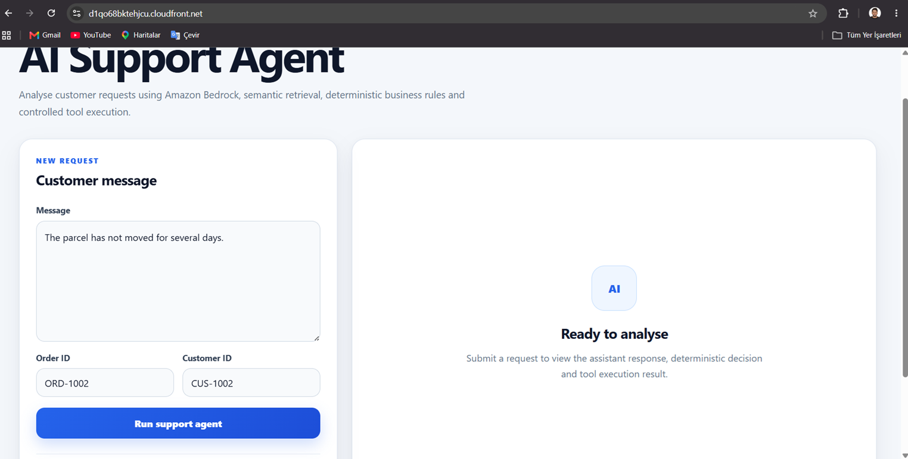
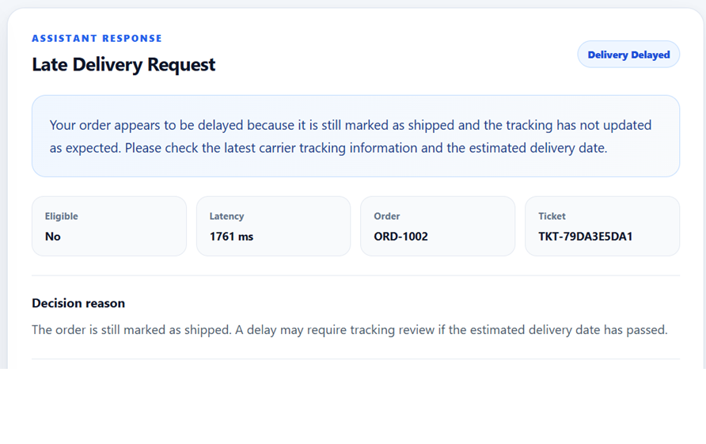
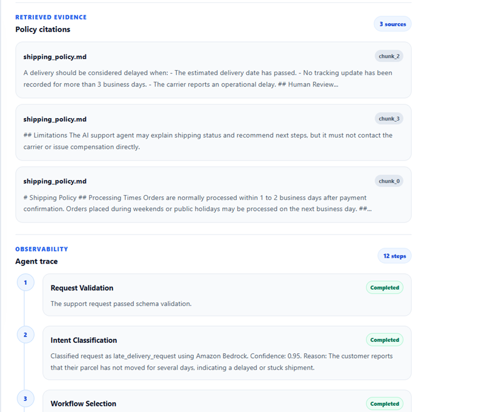

Validate and classify
Pydantic schemas validate the request before Amazon Bedrock classifies it into a supported workflow. Low-confidence classifications fall back to deterministic intent logic.
A production-style serverless customer-support agent that combines Amazon Bedrock with semantic policy retrieval, deterministic business rules, identity validation, controlled tool execution, citations, observability, and persistent audit records.

Problem
A customer-support model cannot safely make unrestricted refund, cancellation, escalation, or order decisions. A useful enterprise system must verify identity, retrieve the correct policy, apply auditable business logic, restrict tool access, and preserve the complete outcome of each request.
This project was built to demonstrate that separation of responsibilities. The language model interprets requests and generates grounded explanations, while deterministic backend components retain control over final business decisions and executable actions.
Architecture
The frontend is delivered through Amazon CloudFront from a private S3 bucket. API Gateway invokes a container-based AWS Lambda backend that coordinates validation, retrieval, decision logic, response generation, tool routing, and persistence.
Workflow
Pydantic schemas validate the request before Amazon Bedrock classifies it into a supported workflow. Low-confidence classifications fall back to deterministic intent logic.
The backend checks that the order exists and that the supplied customer ID matches before exposing order details or evaluating an operation.
Amazon Titan Text Embeddings represents the customer request and selected policy chunks. Cosine similarity ranks the most relevant evidence for the current workflow.
Refund, cancellation, damaged-item, shipping, and late-delivery outcomes are evaluated by explicit backend functions rather than by the language model.
Bedrock receives the verified order data, deterministic decision, original request, and retrieved evidence to produce the customer-facing explanation.
Only mapped tools can execute. Support-ticket results, citations, latency, decisions, and trace steps are stored in DynamoDB as a permanent audit record.
Application Output

The interface exposes the assistant response together with the final workflow status, eligibility result, processing latency, verified order reference, generated support-ticket ID, and deterministic decision reason.
Grounding & Observability

The user can inspect the policy chunks used as evidence and follow the workflow step by step. The trace covers validation, intent classification, workflow selection, order lookup, identity validation, policy retrieval, decision logic, response generation, tool routing, tool execution, and the final decision.
Safety Design
Eligibility and workflow outcomes are produced by explicit business-rule functions. Retrieved text and generated language cannot override the result.
The agent cannot call arbitrary functions. Only backend tools explicitly mapped for the selected workflow can receive validated structured arguments.
Order information is withheld when the order ID is missing, the order does not exist, or the customer ID does not match.
Deterministic providers handle low-confidence intent classification, unavailable model calls, or invalid generated output.
Supported Workflows
| Workflow | Typical result |
|---|---|
| Late delivery | Delivery status evaluation and controlled review-ticket creation. |
| Shipping information | Verified shipping information grounded in the relevant policy. |
| Refund request | Deterministic eligibility decision or human-review route. |
| Cancellation request | Cancellation decision based on order state and business rules. |
| Damaged item | Damage review workflow and support-ticket creation. |
| Order status | Identity-verified order information. |
| General support | Safe escalation for unsupported or ambiguous requests. |
Technology Stack
React, TypeScript, Vite, CSS, Fetch API, Amazon S3, and Amazon CloudFront.
Python 3.12, FastAPI, Pydantic, Mangum, Boto3, and an AWS Lambda container.
Amazon Bedrock Nova, Amazon Titan Text Embeddings, semantic retrieval, cosine similarity, citations, and deterministic fallbacks.
API Gateway, DynamoDB, ECR, IAM, CloudFormation, AWS SAM, CloudWatch, and Docker.
Project Structure
enterprise-ai-support-agent/
├── backend/
│ ├── app/
│ │ ├── agent/ # planner, workflows, validator, tool router
│ │ ├── models/ # request, response and tool schemas
│ │ ├── rag/ # policy loading, chunking and retrieval
│ │ ├── services/ # Bedrock, policy and persistence services
│ │ ├── tools/ # order lookup and ticket creation
│ │ └── routers/ # FastAPI endpoints
│ └── data/policies/
├── frontend/src/ # React interface, services and types
├── template.yaml # AWS SAM infrastructure
├── Dockerfile.lambda
└── docker-compose.ymlThis structure keeps model interaction separate from final authority, making individual services and workflow rules easier to test, replace, and audit.
Deployment Scope
The live deployment demonstrates the complete production-style workflow, but it does not perform real refunds, cancellations, carrier operations, or external helpdesk actions. The current tool layer creates controlled support-ticket records and stores them in DynamoDB.
This keeps the public application safe while still demonstrating model integration, serverless deployment, retrieval, validation, tool routing, observability, and persistence.
Project Links